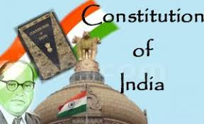
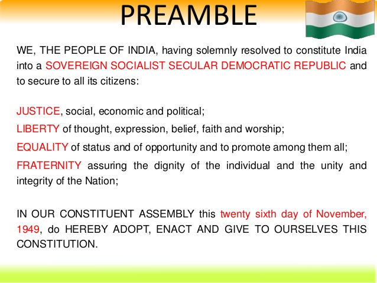
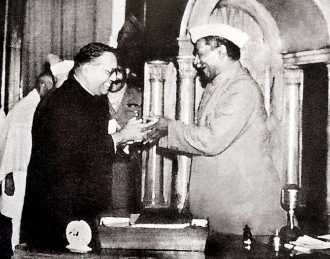
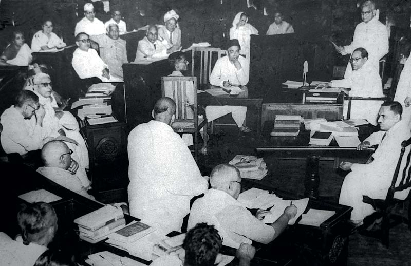

The Constitution of India is the supreme law of India. It lays down the framework defining fundamental political principles, establishes the structure, procedures, powers and duties of government institutions and sets out fundamental rights, directive principles and the duties of citizens. It is the longest written constitution of any sovereign country in the world. B. R. Ambedkar, the chairman of the Drafting Committee, is widely considered to be its chief architect.
It imparts constitutional supremacy and not parliamentary supremacy, as it is not created by the Parliament but, by a constituent assembly, and adopted by its people, with a declaration in its preamble. Parliament cannot override the constitution. It was adopted by the Constituent Assembly on 26 November 1949, and came into effect on 26 January 1950. With its adoption, the Union of India became the modern and contemporary Republic of India replacing the Government of India Act, 1935 as the country's fundamental governing document. To ensure constitutional autochthony, the framers of the constitution repealed the prior Acts of the British Parliament via Article 395 of the constitution. India celebrates its coming into force on 26 January each year, as Republic Day.
It declares India a sovereign, socialist, secular, democratic republic, assuring its citizens of justice, equality, and liberty, and endeavours to promote fraternity among them.
The Indian constitution is the world's longest. At its commencement, it had 395 articles in 22 parts and 8 schedules. It is made up of approximately 145,000 words, making it the second largest active constitution in the world. In its current form (September 2012), it has a preamble, 25 parts with 448 articles, 12 schedules, 5 appendices and 101 amendments, the latest of which came into force on 8 September 2016.
 B. N. Rau was appointed as the Constitutional Adviser to the Constituent Assembly in formulating the Indian Constitution in 1946. He was responsible for the general structure of its democratic framework of the Constitution and prepared its initial draft in February 1948. This draft was debated, revised and finally adopted by the Constituent Assembly of India on 26 November 1949.
 On 14 August 1947 meeting of the Assembly, a proposal for forming various committees was presented. Such committees included a Committee on Fundamental Rights, the Union Powers Committee and Union Constitution Committee. On 29 August 1947, the Drafting Committee was appointed, with Dr B. R. Ambedkar as the Chairman along with six other members assisted by a constitutional advisor. These members were Pandit Govind Ballabh Pant, Kanaiyalal Maneklal Munshi (K M Munshi, Ex- Home Minister, Bombay), Alladi Krishnaswamy Iyer (Ex- Advocate General, Madras State), N Gopalaswami Ayengar (Ex-Prime Minister, J&K and later member of Nehru Cabinet), B L Mitter (Ex-Advocate General, India), Md. Saadullah (Ex- Chief Minister of Assam, Muslim League member) and D P Khaitan (Scion of Khaitan Business family and a renowned lawyer). The constitutional advisor was Sir Benegal Narsing Rau (who became First Indian Judge in International Court of Justice, 1950–54). Later B L Mitter resigned and was replaced by Madhav Rao (Legal Advisor of Maharaja of Vadodara). On D P Khaitan's death, T T Krishnamachari was included in the drafting committee.